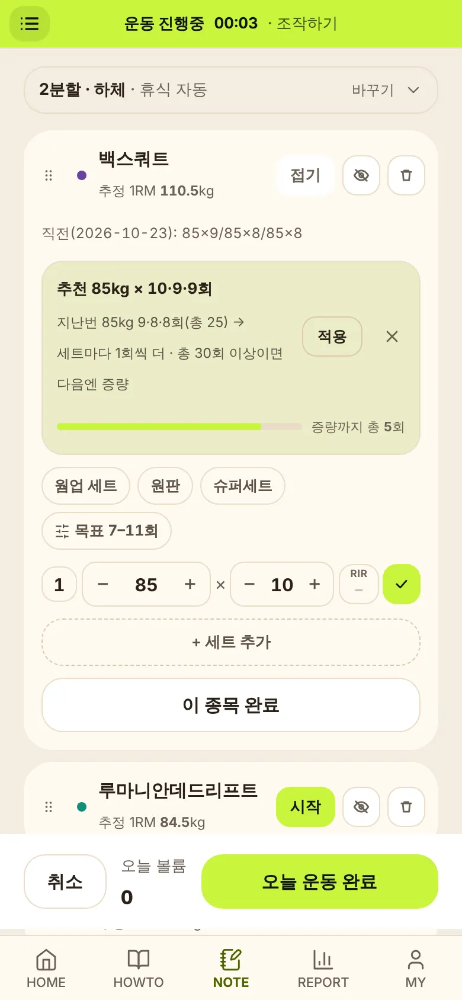
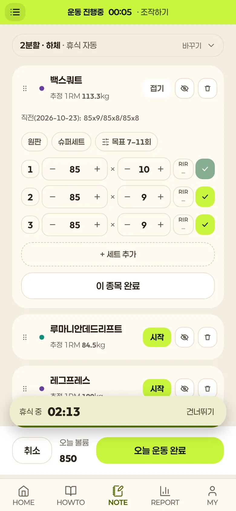
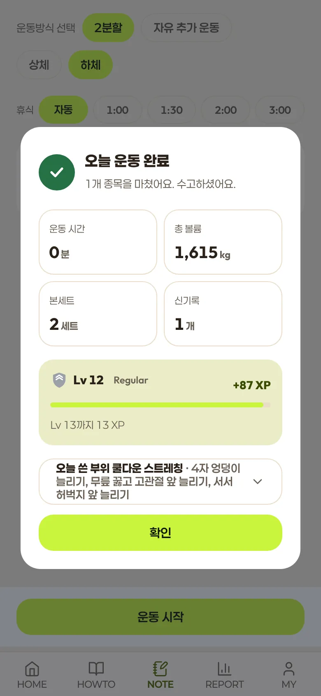
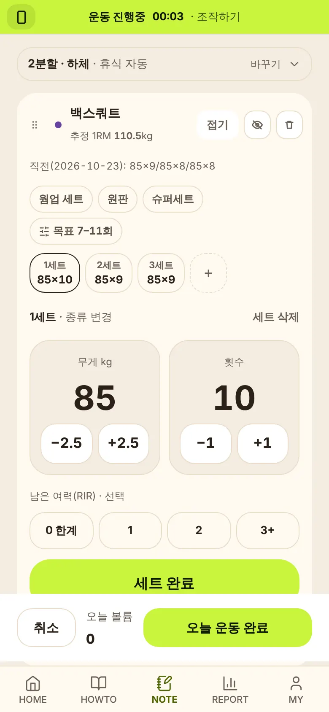

평소 하던 운동을 그대로 기록하세요. 지난번의 나를 기준으로 오늘 몇 kg, 몇 번 할지 알려줘서 조금씩 더 무거워지게 도와줘요.
운동을 대신 정해 주지 않아요. 내가 고른 운동을 기록하면, 그 기록이 다음 목표가 돼요.
종목을 다 볼 필요 없어요. 자주 하는 운동 몇 개로 루틴을 만들면, 지난 기록과 오늘 목표가 미리 채워져요.

체크하면 쉬는 시간이 바로 시작돼요. 너무 쉽거나 힘들면 다음 세트 무게를 그 자리에서 알려줘요.

끝나면 오늘 기록을 한 장으로 정리하고, 다음번 목표를 지난번보다 한 걸음만 높여요.

예시: 스쿼트 60kg, 목표 6–10회. 지난번에 몇 번 했는지 바꿔 보세요.

운동 중에도 상단 버튼으로 바로 바꿀 수 있어요. 화면 색(다크·베이지·라이트)과 강조색도 설정에서 골라요.
그 밖에 캘린더, 주간 리포트, 스트레칭 가이드, 레벨·시즌이 있어요.
앱은 혼자 운동하는 날을 돕는 기록 도구예요. 처음 시작하거나 자세가 불안하면, 트레이너에게 직접 배우는 게 가장 빠르고 안전해요.
네. 지금은 광고 없이 무료로 쓸 수 있어요.
오늘 할 운동을 대신 정하지는 않아요. 처음 루틴을 만들 때 주당 운동 일수에 맞는 분할 예시를 보여주고, 그 안에서 하던 운동으로 바꿔 쓰면 돼요. 그다음부터는 내 기록을 보고 무게와 횟수 목표를 알려줘요.
쓸 수 있어요. 다만 기본 자세는 트레이너에게 먼저 배우는 걸 권해요. 처음 8주는 주간 세트 기준을 낮게 잡아줘요.
네. 고른 목표에 맞춰 목표 횟수, 쉬는 시간, 부위별 주간 세트 기준이 바뀌어요.
브라우저에서 바로 쓸 수 있어요. 홈 화면에 추가하면 앱처럼 열려요. 아이폰은 사파리 공유 버튼 → "홈 화면에 추가", 안드로이드는 크롬 메뉴 → "홈 화면에 추가"예요.
운동 중 입력한 세트는 휴대폰에 바로 저장돼서, 신호가 끊겨도 기록을 이어갈 수 있어요. 운동 완료 기록은 연결되면 자동으로 올라가요. 이 휴대폰에서 한 번 불러온 기록은 신호가 약해도 보이지만, 로그인과 처음 불러오는 기록은 인터넷이 필요해요.